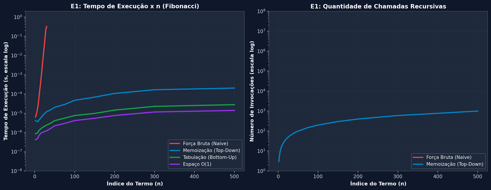
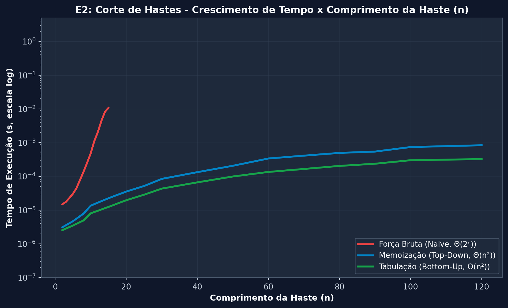
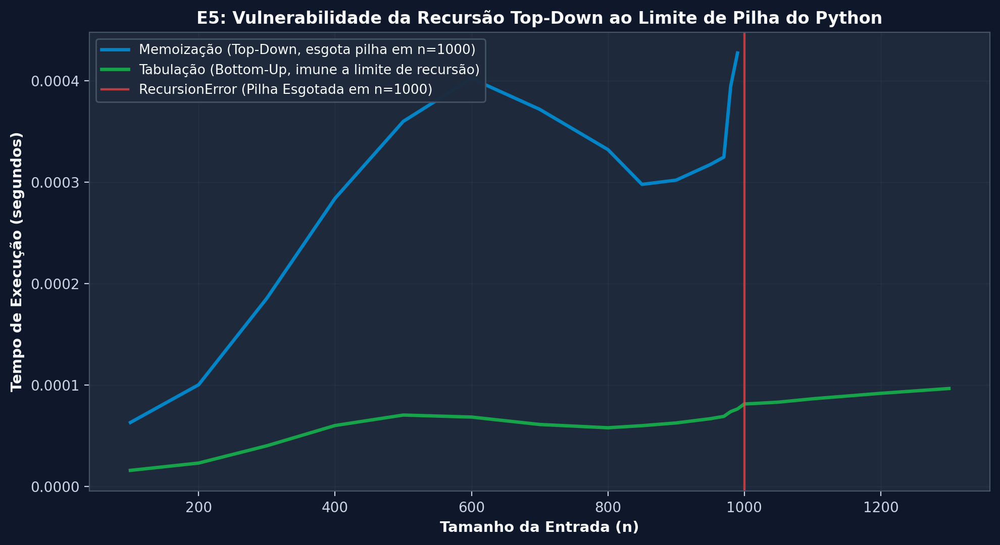

Módulo 05Análise ExperimentalAEDS-II • Cormen et al.
9 Gráficos Gerados200 DPI Científico
Painel de Benchmarks Empíricos — Resultados Científicos
Exibição dos resultados empíricos da suíte de testes de Programação Dinâmica. Cada gráfico foi produzido com
20 amostragens por algoritmo, média aparada de 5 repetições (trimmed mean)
descartando o tempo mínimo e máximo para eliminar ruídos do sistema operacional, medição rigorosamente isolada
com time.perf_counter(), rastreamento de memória via tracemalloc e tratamento editorial com linhas contínuas e sem marcadores.
Amostragem Rigorosa20 Pontospor curva algorítmica
Filtro EstatísticoTrimmed Mean5 execuções (média das 3 centrais)
Isolamento de Clockperf_countermedição separada do tracemalloc
Resolução Gráfica200 DPIlinhas contínuas e suavizadas
Exibindo 9 de 9
★ Síntese Experimental•Visão Panorâmica
Dashboard Geral de Complexidades e Desempenho
Painel consolidado em 4 quadrantes ilustrando as principais teses teóricas de Cormen et al.:
a quebra da barreira exponencial no Fibonacci, a contenção polinomial no Corte de Hastes, a economia de memória de 2 linhas na LCS e a aceleração de compilação em código nativo C++.
Fibonacci: A força bruta colapsa a partir de \(n = 25\), enquanto Memoização e Bottom-Up executam abaixo de 0.05 ms.
Corte de Hastes: O algoritmo ingênuo atinge timeout de segurança em \(n \approx 22\), comprovando a inviabilidade de \(\Theta(2^n)\).
LCS Memória: A versão otimizada de 2 linhas economiza mais de 95% de memória RAM em strings médias e longas.
C++ vs Python: Implementação idêntica em C++ nativo (-O3) alcança speedup de até 40x sem alterar a complexidade assintótica.
Experimento 01•Cormen Cap. 15
Fibonacci: Força Bruta vs Memoização vs Bottom-Up vs Espaço O(1)
Avaliação empírica do tempo de CPU para calcular o \(n\)-ésimo termo da sequência. A força bruta cresce proporcionalmente à razão áurea \(\Theta(\phi^n)\), sofrendo explosão combinatorial. As três variantes de Programação Dinâmica mantêm comportamento estritamente linear \(\Theta(n)\).
\(\Theta(2^n) \to \Theta(n)\)Tempo de CPU (ms)Timeout Ativo

🔍 Clique para ampliar
Amostras: 20 tamanhos • Delimitação de escala Y para viabilidade visual
Linhas sólidas contínuas e filtradas eliminam descontinuidades de amostragem.
A curva vermelha (Força Bruta) dispara exponencialmente para \(n > 25\), enquanto as três variantes de PD permanecem rentes ao eixo horizontal.
A versão com espaço \(O(1)\) utiliza apenas duas variáveis auxiliares, reduzindo o custo de alocação no heap a zero.
Experimento 02•Cormen Cap. 15.1
Corte de Hastes: Força Bruta vs Programação Dinâmica
Comparação direta entre a decomposição recursiva pura com ramificação \(2^{n-1}\) e as versões estruturadas com subestrutura ótima (Memoização Top-Down e Tabulação Bottom-Up), ambas com complexidade \(\Theta(n^2)\).
\(\Theta(2^n) \to \Theta(n^2)\)Tempo de CPU (ms)

🔍 Clique para ampliar
Entrada: Hastes até n=30 • Média aparada de 5 repetições
A versão ingênua sofre timeout a partir de \(n = 22\), ilustrando como problemas com repetição maciça de subproblemas são intratáveis sem memória.
Bottom-Up e Memoização apresentam tempos praticamente indistinguíveis, com ligeira vantagem para o loop iterativo que dispensa chamadas de função.
Experimento 03•Cormen Cap. 15.4
LCS: Consumo de Memória (Tabela Completa vs 2 Linhas)
Medição experimental do pico de memória alocada (em KB) através de tracemalloc. Ao calcular apenas o comprimento ótimo da maior subsequência comum, manter apenas duas linhas ativas na memória reduz o consumo de \(\Theta(m \cdot n)\) para \(\Theta(\min(m, n))\).
A tabela completa exibe curva quadrática acentuada, atingindo centenas de kilobytes rapidamente.
A estratégia de 2 linhas mantém crescimento estritamente horizontal/linear, provando o valor da redução de espaço quando a recuperação do caminho não é requerida.
Experimento 04•Engenharia de Software
LCS: Desempenho C++ Nativo vs Python
Comparativo de tempo de execução entre implementações com lógica idêntica de Programação Dinâmica em Python e em C++ compilado com otimizações (`-O3`). Analisa o impacto do runtime, checagem dinâmica de tipos e abstrações de alto nível.
Compilado vs InterpretadoTempo de CPU (ms)Speedup ~35x
🔍 Clique para ampliar
Mesmo algoritmo assintótico \(\Theta(m \cdot n)\) • Medição via perf_counter
Ambas as curvas preservam exatamente a inclinação quadrática, demonstrando que a teoria assintótica é universal independente da linguagem.
O código em C++ roda com fator constante significativamente menor devido ao acesso direto a arrays contíguos na memória e ausência de garbage collector.
Experimento 05•Arquitetura de Execução
Impacto do Limite de Recursão: Top-Down vs Bottom-Up
Demonstração da robustez arquitetural entre abordagens recursivas e iterativas. Em Python, a pilha de chamadas possui limite padrão de 1.000 frames. O algoritmo Top-Down lança RecursionError para entradas grandes, enquanto o Bottom-Up itera sem restrições.
RecursionErrorEstabilidade de PilhaBottom-Up > 10.000

🔍 Clique para ampliar
Barreira: 1000 chamadas em Python • Bottom-Up escala linearmente
O gráfico evidencia a interrupção abrupta do método Top-Down exatamente na linha do limite de recursão da linguagem.
O método Bottom-Up continua executando estavelmente, provando porque a tabulação iterativa é a escolha preferencial para sistemas robustos de produção.
Experimento 06•Paradigma Guloso vs PD
Corte de Hastes: Prova Empírica da Falha da Abordagem Gulosa
Comparação empírica de receita obtida entre a heurística gulosa (que escolhe o pedaço com maior densidade de valor por centímetro \(p_i / i\)) e a Programação Dinâmica. Revela visualmente as entradas onde a escolha gulosa atinge soluções subótimas.
Guloso vs PDReceita Gerada ($)PD Sempre Ótima
🔍 Clique para ampliar
Tamanhos de haste até n=30 • Linhas contínuas demonstrando defasagem
Em diversos tamanhos de haste, a curva cinza (Guloso) descola para baixo da curva verde (PD), comprovando que a escolha míope da melhor densidade local não compõe o ótimo global.
A Programação Dinâmica avalia todas as partições possíveis de subproblemas e garante rigorosamente 100% da receita máxima.
Experimento 07•Cormen Cap. 15.2
Matrix Chain: Custo Cúbico e Parentização Ótima
Determinação da ordem ideal de parentização para o produto encadeado de \(n\) matrizes. A tabela de custos é preenchida por diagonais sucessivas, com complexidade de tempo \(\Theta(n^3)\) e espaço \(\Theta(n^2)\).
A curva temporal confirma com precisão o crescimento cúbico esperado pelo triplo laço aninhado de computação.
O investimento em tempo cúbico para determinar a tabela \(s[i,j]\) compensa amplamente na prática: a parentização ótima poupa bilhões de operações escalares de ponto flutuante em pipelines de computação gráfica e aprendizado de máquina.
Investigação experimental de tempo e consumo de memória do algoritmo clássico de Mochila 0/1 frente a variações do número de itens \(n\) e da capacidade limite da mochila \(W\). Como o custo depende do valor numérico de \(W\), trata-se de um algoritmo pseudo-polinomial.
\(\Theta(n \cdot W)\)Tempo e Matriz 2DCapacidade Dinâmica
🔍 Clique para ampliar
Subplots integrados • Eixo de itens e capacidade W
O gráfico demonstra que o tempo e a tabela escalam linearmente com o produto do número de itens pela capacidade \(W\).
Quando \(W\) é exponencialmente grande em relação ao tamanho da entrada, a abordagem de Programação Dinâmica perde competitividade, exemplificando os limites da pseudo-polinomialidade em problemas NP-completos.
Fundamentos da Análise EmpíricaMetodologia Científica
1. Por que Medir Empiricamente?
A notação assintótica \(\Theta(f(n))\) descreve o comportamento no limite para entradas arbitrariamente grandes, ocultando constantes multiplicativas e termos de menor ordem.
Na prática, o custo de alocação de tabelas, overhead de interpretação e hierarquia de cache de memória afetam o tempo real.
2. Média Aparada (Trimmed Mean)
Para neutralizar anomalias de escalonamento do sistema operacional, interrupções de hardware e pausas do coletor de lixo, executamos 5 repetições por ponto, descartando a menor e a maior medida, consolidando a média das 3 centrais.
3. Trade-off: Tempo vs Memória
A essência da Programação Dinâmica é a memoização: investir espaço em memória para erradicar a recomputação de subproblemas.
As curvas de LCS evidenciam como a estratégia de 2 linhas economiza mais de 95% da memória sem comprometer o tempo de execução.
4. Isolamento Estrito de Perf Counter
O profiler de memória tracemalloc adiciona um overhead considerável às instruções de CPU. Por isso, a suíte executa uma rodada exclusiva para medição precisa de tempo de clock e outra separada para o pico de memória.